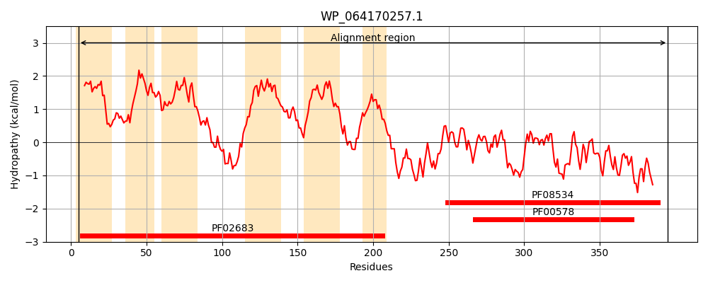
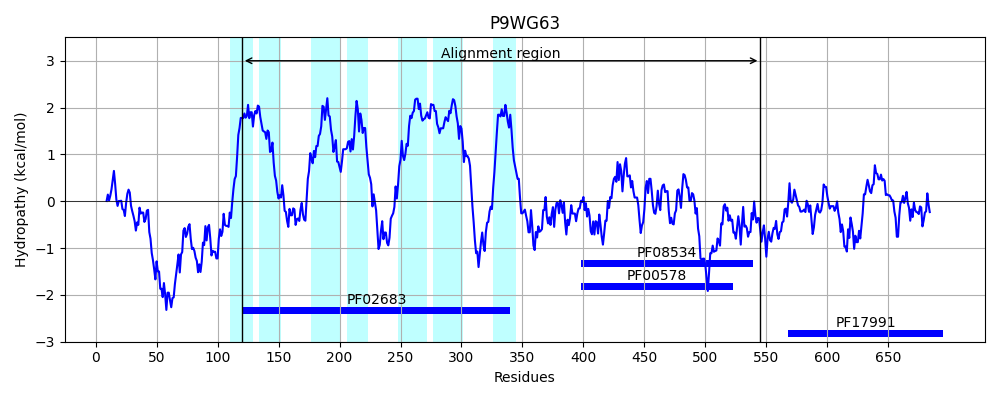
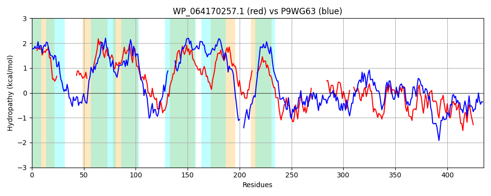

Hit Accession: P9WG63
Hit TCID: 5.A.1.2.9
Hit Description: gnl|BL_ORD_ID|11790 gnl|TC-DB|P9WG63|5.A.1.2.9 Protein DipZ OS=Mycobacterium tuberculosis (strain ATCC 25618 / H37Rv) GN=dipZ PE=1 SV=1
Mach Len: 435
e:0.000000
Query TMS Count : 6
Hit TMS Count: 7
TMS-Overlap Score: 3.700000
Predicted Substrates:CHEBI:23008;carbohydrate, CHEBI:10545;electron
BLAST Alignment:
Score: 527 , Bit scores: 207 bits, E-value: 1.3e-60, Alignment length: 435, Percentage identity: 32
Query: 5 IAFLGGMLTLLSPCTLPVIPLLFAS------------------VRGRRGQLAIM-----LAGMALMFGAVSWLVTVASGWVVNLTLAGRGLALAFFALVGLSLLSQRVAQRLTSPLVALGNQLNNASSRQRGWIGSLLAGLAVGLLWAPCAGPVLGAILSLGFVHPGQATTGGLLLAYGSGGALMLFLLGWCGAALIARLRRGLAFGERLRRL----AGVAMLASVALIASGGDRYLQSAGGWSQALEQRLAARLPQPEQKTILQPIAAP--------------QPSSAMPSLAGGSAWLNSPALTP---ERLKGKVVLVDFWTRECINCQHTLPYVRDWANKYRAAGLVVIGVHTPEYPWERSLPLLRQAVKDWRITYPVVADNEYAIWNAFGNQYWPAHYIFDARGQLRYTAFGEGDYARQEQVIQQLLQESK 395
+ FLGG++T +SPC LPV+P++F S VR +R A + + G+ L FG V+ L + + A R AL +G L+ R Q L P + + S G GLA+G+L+ PCAGP+L AI+ G T L + G AL L G + R+ AF R R + V +L +VAL+ ++ ++ +L+Q+++ EQ + + A + P L G + WLN+P P + L+GKVVL+DFW CINCQ +P+V W Y+ +GL VIGVHTPEY +E+ + + + I+YP+ DN YA W + N+YWPA Y+ DA G +R+ FGEGDY E +++QLL ++K
Sbjct: 120 VGFLGGLITGISPCILPVLPVIFFSGAQSVDAAQVAKPEGAVAVRRKRALSATLRPYRVIGGLVLSFGMVTLLGSALLSVLHLPQDAIRWAALVALVAIGAGLIFPRFEQLLEKPFSRIPQKQIVTRSNGFG------LGLALGVLYVPCAGPILAAIVVAGATATIGLGTVVLTATFALGAALPLLFFALAGQRIAERVG---AFRRRQREIRIATGSVTILLAVALVFDLPAALQRAIPDYTASLQQQISTGTEIREQLNLGGIVNAQNAQLSNCSDGAAQLESCGTAPDLKGITGWLNTPGNKPIDLKSLRGKVVLIDFWAYSCINCQRAIPHVVGWYQAYKDSGLAVIGVHTPEYAFEKVPGNVAKGAANLGISYPIALDNNYATWTNYRNRYWPAEYLIDATGTVRHIKFGEGDYNVTETLVRQLLNDAK 545 | Protein Hydropathy Plots: |
|---|
|  |  |
Pairwise Alignment-Hydropathy Plot:
|
|---|
|  |